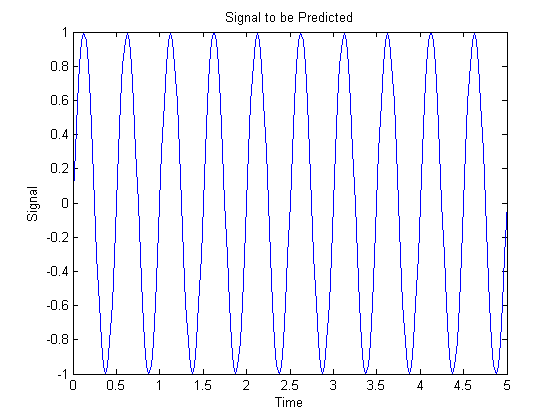
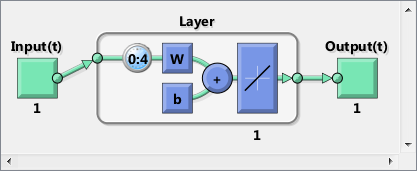
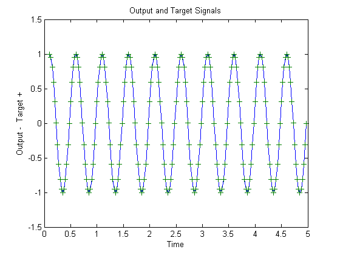
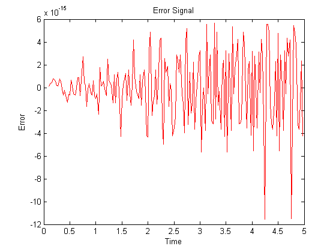

Linear Prediction Design
This example illustrates how to design a linear neuron to predict the next value in a time series given the last five values.
Contents
Defining a Wave Form
Here time is defined from 0 to 5 seconds in steps of 1/40 of a second.
time = 0:0.025:5;
We can define a signal with respect to time.
signal = sin(time*4*pi); plot(time,signal) xlabel('Time'); ylabel('Signal'); title('Signal to be Predicted');
Setting up the Problem for a Neural Network
The signal convert is then converted to a cell array. Neural Networks represent timesteps as columns of a cell array, do distinguish them from different samples at a given time, which are represented with columns of matrices.
signal = con2seq(signal);
To set up the problem we will use the first four values of the signal as initial input delay states, and the rest except for the last step as inputs.
Xi = signal(1:4); X = signal(5:(end-1)); timex = time(5:(end-1));
The targets are now defined to match the inputs, but shifted earlier by one timestep.
T = signal(6:end);
Designing the Linear Layer
The function newlind will now design a linear layer with a single neuron which predicts the next timestep of the signal given the current and four past values.
net = newlind(X,T,Xi); view(net)
Warning: Rank deficient, rank = 3, tol = 4.352074e-14.
Testing the Linear Layer
The network can now be called like a function on the inputs and delayed states to get its time response.
Y = net(X,Xi);
The output signal is plotted with the targets.
figure plot(timex,cell2mat(Y),timex,cell2mat(T),'+') xlabel('Time'); ylabel('Output - Target +'); title('Output and Target Signals');
The error can also be plotted.
figure E = cell2mat(T)-cell2mat(Y); plot(timex,E,'r') hold off xlabel('Time'); ylabel('Error'); title('Error Signal');
Notice how small the error is!
This example illustrated how to design a dynamic linear network which can predict a signal's next value from current and past values.